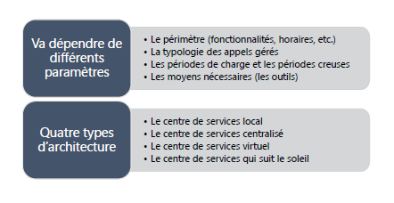
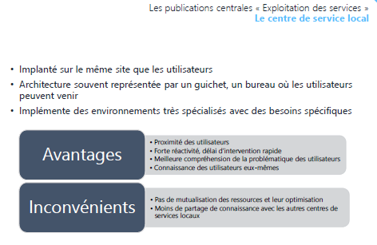
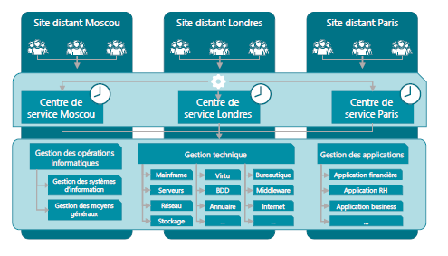
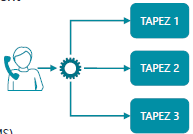
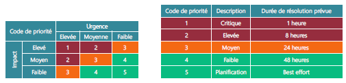
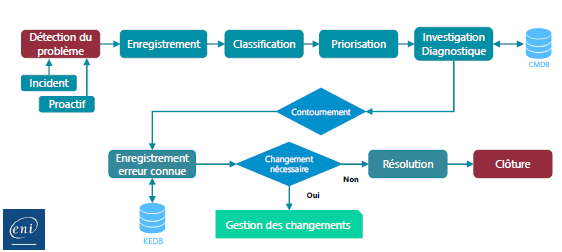
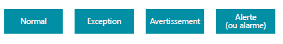

Sensibilisation ITIL
Module 06 – Les publications centrales
« Exploitation des services »
Objectifs - Définir le rôle de l’exploitation des services. - Définir le centre de services. - Différencier les types de support. - Identifier les types d’architecture d’un centre de services. - Identifier les processus.
Les publications centrales « Exploitation des services »
Objectif - Coordonner les activités des processus garantissant l’atteinte des niveaux de service convenus. - Gérer l’exploitation au quotidien.
Ses missions - Coordonner et réaliser les activités nécessaires à la fourniture des services. - Exploitation – Supervision – Pilotage – Support – Maintenance. - Être efficace puis efficient tout au long de la vie des services (coût). - Produire des indicateurs pour permettre à la phase d’amélioration continue de faire des propositions d’optimisation de la DSI.
L’exploitation des services : quelques termes
Stabilité
- Le Système d'Infrastructure fonctionne normalement et est disponible : on ne change plus rien.
- Réduction du nombre de changements et donc de Mises En Production au minimum (MEP).
Réactivité - Réaction aux sollicitations des métiers pour les rendre les plus performantes possibles.
Coûts par rapport à qualité - Éviter la surqualité, réduire les coûts en gardant le niveau de qualité demandé : industrialisation de l'exploitation, supervision et pilotage.
Réactivité par rapport à proactivité
- Agir en fonction des évènements ou incidents.
- Essayer d’anticiper en recherchant des moyens d’optimiser le SI.
- Investir pour garantir un bon fonctionnement.
Les publications centrales « Exploitation des services »
Les 4 fonctions ITIL v3

Le centre de service : au cœur de l’exploitation

Ses missions - Le « service desk » - Être point de contact unique pour les utilisateurs - Porter toute la relation avec les utilisateurs : relation bidirectionnelle - Servir les utilisateurs et les satisfaire - Garantir la bonne image de la DSI auprès des utilisateurs - Être vitrine du département informatique - Répondre aux questions et demandes des utilisateurs - Restaurer le service dans un état normal, standard le plus rapidement possible dans le respect des délais définis et contractuels - Assurer les activités de N1, gérer les escalades aux groupes supérieurs et coordonner
Fonction centre de service

Centre d’appels (call centers) (Niveau 0) - Prendre des appels - Passer des appels en masse - Un standard téléphonique est en place - On l’appelle / Il nous rappelle - On s’identifie (nom, numéro de contrat, etc.) - On explique les raisons de l’appel - La réponse du centre d’appel est souvent : « On vous rappellera », « Un technicien vous rappellera » - Très peu de valeur ajoutée, réponse minimale pour l’appelant - Il est le niveau 0 - Gère très peu d’actions, amène une forte frustration des utilisateurs - Transfert le ticket d’appel
Le centre d'assistance (Niveau 1) - Gère les pannes et les dysfonctionnements remontés par les utilisateurs - Gère et coordonne toutes les activités liées au dépannage de l’utilisateur - Donne des informations sur l’avancement du dépannage si l’utilisateur le demande - Est dans des actions de type réactif - Attend que l’utilisateur appelle pour le renseigner - Le centre d’assistance - Est là en support des utilisateurs qui appellent - Répond aux sollicitations des utilisateurs - À peu ou pas d’actions proactives vers les utilisateurs
Le centre de services - Est un surensemble du centre d’assistance en ajoutant des activités de proactivité - Intervient dans tous les processus de l’exploitation des services - Et dans une partie des activités de deux processus de la transition des services -La gestion des changements -La gestion des déploiements et des mises en production - Ses activités - La prise en compte de l’appel de l’utilisateur - Ouverture du ticket d’appel dans l’outil de gestion du centre de services - Enregistrement des informations liées à l’appel de l’utilisateur - La catégorisation - La codification - L’investigation et le diagnostic - La réponse dépendra de la demande utilisateur - Escalade vers les groupes support de niveau 2 et de niveau 3 si nécessaire - Le suivi de l’appel - La résolution / clôture du ticket - La gestion des enquêtes de satisfaction des utilisateurs - La mise à jour de la base de connaissance (puis enquête de satisfaction auprès de l'utilisateur)
Le centre de service : configuration et architecture





Le centre de service : les outils - L’autocommutateur téléphonique intelligent - Serveur Vocal Interactif - Couplage téléphonique informatique - Logiciel de relation utilisateur (CRM) - Intégration avec les autres outils - Le CMS - La base des erreurs connues (KEDB) - La gestion documentaire de l’entreprise (SKMS) - Les outils de gestion de services - Centre de services dit en libre-service (utilisateurs autonomes)

Les processus de l’exploitation des services
- L’exécution des requêtes
- Traiter les demandes de services provenant des utilisateurs
- La gestion des accès
- Traiter les requêtes relatives à l’accès, aux droits et aux privilèges des utilisateurs
- La gestion des incidents
- Restauration au plus vite du service dégradé ou arrêté dans les délais impartis
- La gestion des problèmes
- Rechercher les causes et solutions à des incidents récurrents
- La gestion des évènements
- Interpréter et gérer tous les faits détectables qui arrivent sur l’infrastructure, qu’ils soient normaux ou anormaux
L’exécution des requêtes - Objectifs - Fournir un canal privilégié vers la DSI aux utilisateurs pour émettre et traiter leurs demandes - Fournir de l’assistance auprès des utilisateurs sur l’utilisation des services - Approvisionner des composants standards des services suivant les demandes des utilisateurs - Fournir un canal pour faire remonter les plaintes des utilisateurs vers la DSI - Une requête : demande de service provenant d’un utilisateur - Assistance • Approvisionnement de consommable - Conseil • Accès à un service - Information • Une plainte - Changement standard simple • Tout ce qui n’est pas un incident - Une requête va réaliser une action - Limitée dans le temps - À faible risque et coût - Traitée par une seule personne - Le catalogue des requêtes - Base du fonctionnement de ce processus - Liste précise et détaillée des demandes de services provenant des utilisateurs - Identifie précisément quel profil d’utilisateur a le droit de demander telle requête - Diffusion et promotion de ce catalogue auprès de tous les utilisateurs sont un enjeu majeur
La gestion des accès - Objectifs - Mettre en place les procédures définies par : - La politique de sécurité de la DSI - Les recommandations de la gestion de la disponibilité - Les procédures doivent aussi être connues et diffusées auprès de tous - Fournir aux utilisateurs les droits et privilèges d’un service ou d’un groupe de services - Les droits - Ensemble des règles qui vont définir les types d’accès à un service ou un groupe de services - L’identité - Gestion d’une identification fiable des utilisateurs qui vont accéder à ce service - L’accès au service - Est le niveau, le périmètre de fonctionnalités ou de données auquel un utilisateur peut avoir accès - Notions de confidentialité, gestion des mots de passe et règles associées (initialisation, validation et revalidation) - L’identité des groupes - Cartographie des groupes de l’entreprise nécessaire - Notions de groupe de services offerts à un utilisateur ou groupe d’utilisateurs - Cartographie des services mettant en avant les familles de services en fonction des droits
La gestion des incidents - Objectifs - Rétablir le service dans un état normal de plus rapidement possible conformément au SLA - Rétablir c’est trouver une solution, un palliatif, qui va relancer le service dans son état normal - Minimiser l’impact de l’incident sur les utilisateurs (les conséquences pour l’utilisateur) - Rétablir le service dans les délais contractuels (engagement auprès du client) - Ce processus ne s’occupe pas de trouver la cause de l’incident
- Définition d’un incident
- Ne pas confondre incident, évènement et problème
- Un évènement est un fait détectable qui arrive du
SIalors que l’incident est un évènement qui altère ou dégrade le service rendu - Il survient lorsque le service est arrêté ou quand la qualité du service est diminuée
- L’incident a pour origine un évènement (détecté ou non), mais tous les évènements ne créent pas d’incident
-
Il est détecté soit par un utilisateur, des outils de supervision ou de pilotage par la gestion des évènements
-
Codifier un incident : c’est déterminer la priorité que l’on va lui attribuer
- Pour cela :
- Identifier l’impact de l’incident
- Identifier l’urgence de l’incident
- Utilisation d’une matrice ou d’un référentiel applicatif
- Détermination du délai de rétablissement

- L’impact : effet de l’incident sur l’utilisation d’un service
- Perte d’exploitation :
- Nombre d’utilisateurs bloqués
- Non-respect des dispositions légales
- Positionné sur une échelle de 1 à 3 ou de 1 à 5 (1 élevé, 3 ou 5 faible)
- L’urgence : temps dont dispose la DSI pour rétablir le service
- Positionnée sur une échelle de 1 à 3 ou de 1 à 5

- L’incident majeur
- Fort impact sur les clients
- Hors grille de codification
- D’une priorité très élevée
- Traité différemment des autres incidents
- Utilisation d’une procédure dite de « crise »


La gestion des problèmes
- Objectifs
- Faire diminuer le nombre d’incidents
- Prévenir l’apparition de nouveaux incidents et problèmes
- Minimiser l’impact des incidents
- Optimiser l’efficacité des équipes supports
- Contrôler les problèmes : les transformer en erreurs connues
- Gérer les erreurs
-
La proactivité
- Participe à maintenir le niveau de qualité de service demandé
- Prend l’initiative de la recherche de situations qui dégradent ce niveau
-
Un problème
- Situation dont on recherche la cause inconnue d’un ou plusieurs incidents
- La gestion des incidents traite en temps réel les situations (front line)
- La gestion des problèmes traite les causes de ces situations (back-office)
- Tous les incidents ne déclenchent pas de problèmes
- On ouvre un problème dans le cas d’incidents récurrents ou dans un contexte d’incident majeur
- Une erreur connue
- Problème dont on connaît la cause et dont on a identifié une solution temporaire ou définitive
- La base des erreurs connues (KEDB) contient l’ensemble de ces problèmes transformés en erreurs connues!
- Base mise à disposition du centre de services sous la responsabilité des groupes support

La gestion des évènements
- Objectifs
- Minimiser le nombre d’incidents
- Objectif principal
- Plus d’efficacité dans la gestion des évènements entraîne moins d’incidents
- Surveiller les évènements et les comprendre
- Positionner des seuils et des alarmes
-
Garantir le niveau de qualité de service
- Anticiper les situations pouvant détériorer le niveau de qualité de service
- Avoir une action proactive sur la gestion des évènements pour maintenir et garantir le niveau de qualité de service
- Positionner des seuils sur les composants clés
-
Définition d’un évènement
- Fait détectable arrivant sur le système d’information ou sur la fourniture d’un service
- Changement d’état d’un ou plusieurs composants de l’infrastructure
- Aléatoire, observable et mesurable
- Des outils sont nécessaires pour le détecter et le mesurer
- Sans outillage, pas d’évènement
- 4 types d’évènements
